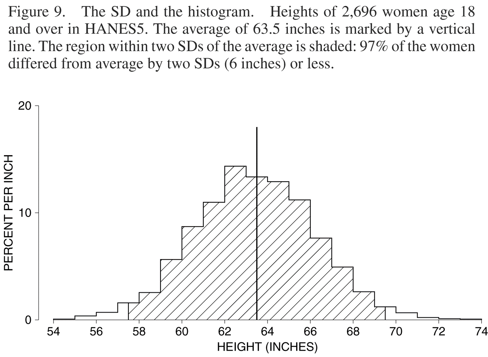
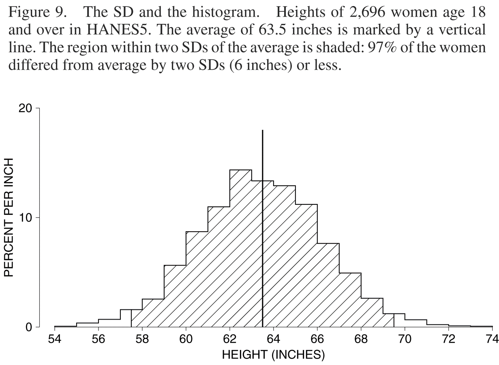

PSQF 4143: Section 4

Brandon LeBeau

plot of chunk chisq
Variation
Central Question of Research: Why are there differences on outcomes?
Is the mean of a sample equal to the mean of the population?
\[ Q = \frac{Q_{3} - Q_{1}}{2} \] \[ Q = \frac{(Q_{3} - Mdn) + (Mdn - Q_{1})}{2} \]
Semi IQR
X
3 4 5 6 7
 

\[ s = \sqrt{\frac{\sum f_{j}X_{j}^{2}}{n} - \left(\frac{\sum f_{j}X_{j}}{n}\right)^2} = \sqrt{\frac{\sum f_{j}X_{j}^{2}}{n} - \bar{X}^2} \]
| X | \(f_{j}\) | \(X_{j}\) | \(f_{j}*X_{j}\) |
|---|---|---|---|
| 1 - 4 | 3 | 2.5 | 7.5 |
| 5 - 8 | 4 | 6.5 | 26 |
| 9 - 12 | 8 | 10.5 | 84 |
| 13 - 16 | 15 | 14.5 | 217.5 |
| 17 - 20 | 28 | 18.5 | 518 |
| 21 - 24 | 12 | 22.5 | 270 |
| 25 - 28 | 14 | 26.5 | 371 |
| 29 - 32 | 10 | 30.5 | 305 |
| 33 - 36 | 6 | 34.5 | 207 |
Q vs S

Q vs S
plot of chunk salary

Popsamp
\[ D = \frac{c\left( n^2 - \sum n_{j}^{2} \right)}{n^2 (c - 1)} \]
Dispersion
\[Sk = \frac{\sum \left(X_{i} - \bar{X}\right)^3}{n s^3_{X}} \]
\[Kur = \frac{\sum \left(X_{i} - \bar{X}\right)^4}{n s^4_{X}} - 3 \]

Dist Diff

plot of chunk boxplot

plot of chunk boxgroup